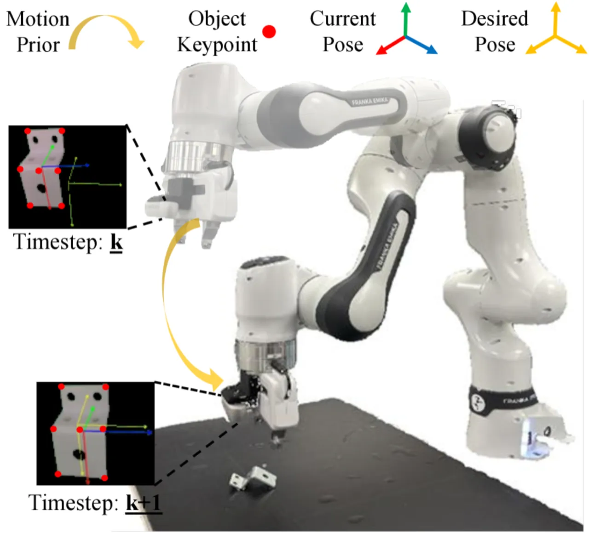
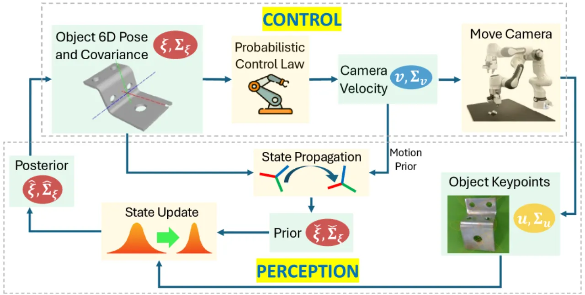
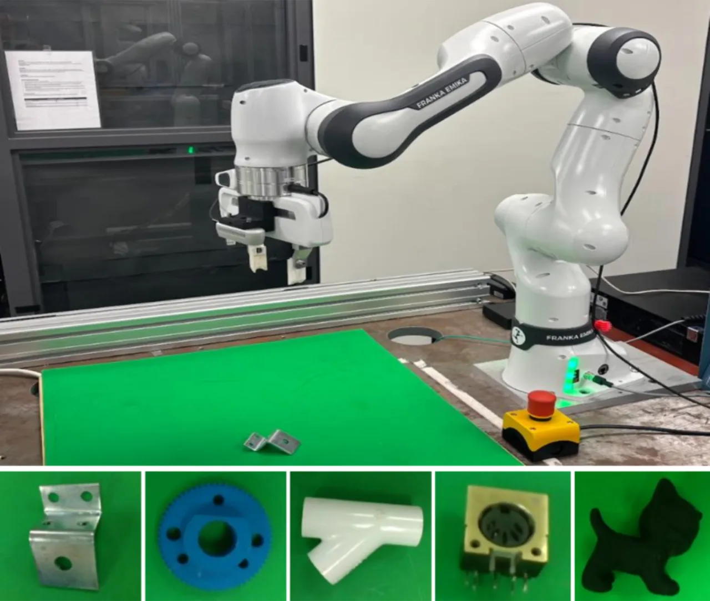
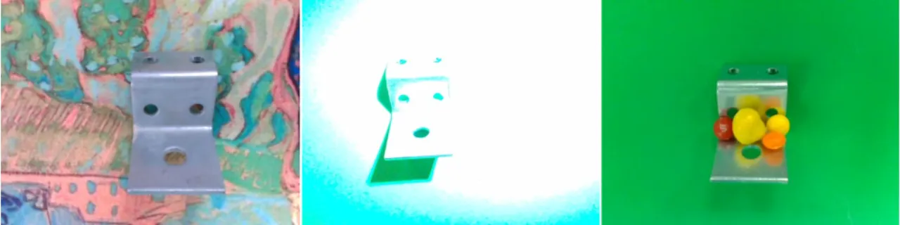
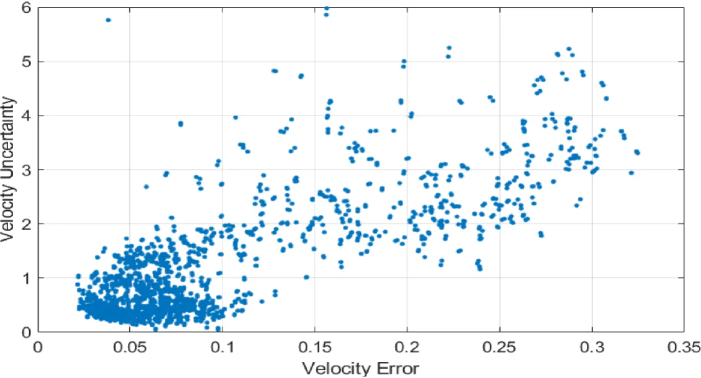

本文针对工业中普遍存在的无纹理物体（缺乏可靠视觉特征）的视觉伺服控制难题， 提出了一种将感知与控制紧密耦合的闭环框架：以扩展卡尔曼滤波器（EKF）融合 基于关键点的位姿估计与运动先验，同时引入概率控制律计算速度不确定度，实现安全可靠的 Pose-Based Visual Servoing（PBVS）。
视觉伺服是机器人精确定位与控制的基础技术。然而，无纹理物体（textureless objects） ——工业场景中大量存在的表面均匀、缺乏特征点的零件——令传统方法举步维艰： 手工设计的特征无法建立稳定的视觉对应，深度学习方法又多依赖单帧预测， 遭遇遮挡或光照突变时极易失稳。
"Visual servoing is fundamental to robotic applications, enabling precise positioning and control. However, applying it to textureless objects remains a challenge due to the absence of reliable visual features. Moreover, adverse visual conditions, such as occlusions, often corrupt visual feedback, leading to reduced accuracy and instability in visual servoing."
— 论文摘要原文

本文核心是将感知与控制形成双向闭环： 感知阶段用 EKF 融合关键点与运动先验估计 6D 位姿； 控制阶段用概率控制律生成相机速度并评估其不确定度； 该速度再作为下一帧感知的运动先验，完成闭环。

感知主干采用 PVNet 从 RGB 图像中提取每帧 2D 关键点及其不确定度。 EKF 以 离散时间恒速运动模型（discrete-time constant-velocity motion model）传播状态， 状态向量包含 6-DOF 物体位姿（位置 + 旋转）。 旋转采用李代数（Lie algebra）参数化的误差状态线性化， 通过 Jacobian 将 2D–3D 关键点对应关系融合进测量更新步骤。 即使某些帧关键点完全遮挡，EKF 仍能利用运动先验维持稳健估计。
区别于标准 PBVS，本文提出的概率控制律（probabilistic control law）不仅输出相机速度指令， 还输出一个 6×6 速度协方差矩阵，用微分熵（differential entropy）量化控制置信度。 当熵值超过安全阈值时，速度指令将被显著降低：
"When the entropy exceeds this threshold, the velocity is significantly reduced to ensure safety."
协方差传播通过对 PBVS 控制方程进行 Jacobian 线性化来实现，将 EKF 状态协方差 传递至最终速度指令的不确定度中，形成端到端的不确定度感知控制链路。

在真实的 7-DOF Franka Emika 机械臂平台上，针对 5 种无纹理物体， 与 IBVS+PVNet 和 PBVS+PVNet 基准方法进行对比， 评估指标包括伺服成功率（SR）、末端平移误差（TE）、旋转误差（RE）和轨迹长度比（LR）。
| 方法 | 成功率 SR (%) | 平移误差 TE (mm) | 旋转误差 RE (°) | 轨迹长度比 LR |
|---|---|---|---|---|
| 正常条件 (Normal Conditions) | ||||
| IBVS + PVNet | 87.81 | 3.27 ± 1.72 | 3.91 ± 2.69 | 1.25 ± 0.36 |
| PBVS + PVNet | 84.15 | 3.66 ± 1.76 | 3.98 ± 3.81 | 1.29 ± 0.58 |
| 本文方法（Proposed） | 95.12 | 3.17 ± 1.45 | 3.81 ± 2.68 | 1.11 ± 0.15 |
| 不利条件 (Adverse Conditions — 遮挡、光变、复杂背景) | ||||
| IBVS + PVNet | 52.17 | 4.91 ± 4.09 | 6.15 ± 3.98 | 1.68 ± 0.78 |
| PBVS + PVNet | 40.58 | 5.53 ± 4.08 | 6.44 ± 4.16 | 1.92 ± 1.02 |
| 本文方法（Proposed） | 82.61 | 3.99 ± 2.72 | 5.70 ± 3.98 | 1.18 ± 0.23 |
| 物体 | IBVS + PVNet (%) | PBVS + PVNet (%) | 本文方法 (%) |
|---|---|---|---|
| Zigzag | — | — | 95.8 |
| Pipe | — | — | 78.3 |
| Gear | — | — | 95.6 |
| Cat | — | — | 90.5 |
| Connector | — | — | 89.5 |
| 平均 | — | — | 89.9 |
"Our approach consistently outperforms both IBVS and PBVS for all objects, achieving the highest average success rate of 89.9%."


实验表明 EKF 时序融合对在不利条件下维持高成功率至关重要： PBVS+PVNet 在不利条件下成功率仅 40.58%，而本文方法达到 82.61%， 提升幅度超过 42 个百分点。 概率控制律输出的不确定度（Pearson r = 0.81）能有效预测控制误差， 支持自适应安全降速，进一步提升系统鲁棒性。
当前框架假设目标物体静止，EKF 的恒速运动模型难以适应动态目标。 作者明确指出"extending the framework to dynamic environments"为重要未来方向。
PVNet 关键点检测和 EKF 测量更新均需要物体预先建立的 3D 模型。 作者指出未来需"generalizing to more challenging object types such as CAD-less or deformable objects"。
PVNet 通常在合成渲染数据上训练，存在域差距（sim-to-real gap）， 可能在真实环境外观差异较大时泛化能力下降。 论文未直接量化此问题，属推断局限。
当前方法被动跟随相机运动，缺乏主动选择最优视角以减少遮挡的机制。 作者明确将"incorporating active viewpoint selection"列为未来工作。